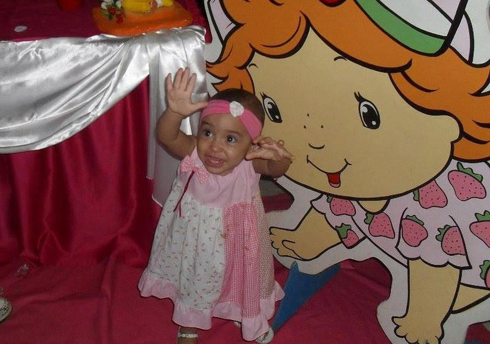
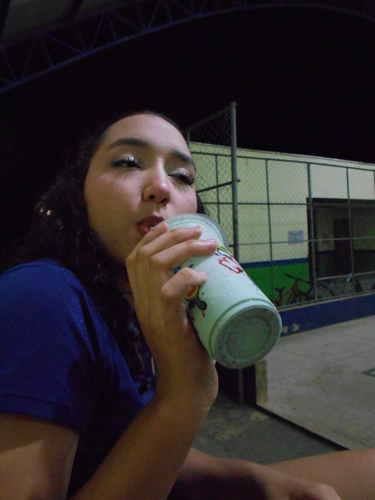

Feliz Aniversário
Mais um Século de Brilho & Mistério
À minha cúmplice de outonos infinitos, soberana das madrugadas veladas e minha vampira favorita.
"Você quer um amor que te consuma. Você quer paixão, aventura e até um pouco de perigo."
Crônicas & Segredos
Capítulo I — O Despertar
Ano IA primeira noite em que nossas almas se encontraram, tecendo laços eternos entre as penumbras de veludo escarlate, foi erguida por sussurros tímidos e confissões profundas que apenas a névoa soube guardar, e que o tempo, em sua infinita marcha, parou para testemunhar.
Capítulo II — A Ascensão
Ano IISob a luz prateada e hipnótica da lua cheia, assim como seus olhos. Nossos destinos foram irrevogavelmente entrelaçados em rituais de gargalhadas doces e segredos guardados pelas sombras. Cada sorriso ecoou pela escuridão como um feitiço poderoso, uma magia antiga conjurada apenas por nós para desafiar a implacável brevidade do tempo e eternizar nossa devoção através das eras.
Capítulo III — O Juramento dos Anos
PresenteDesejo-te incontáveis séculos de uma soberania majestosa e irrefutável, onde a tua saúde, assim como meu amor inabalável resista ao desgaste das eras, sempre coroada por luxuosos banquetes onde os teus sonhos mais intensos e profundos ganham finalmente vida. E, mais do que tudo, anseio que a nosso sombrio amor gótico permaneça inquebrável e intacto, erguendo-se como um escudo eterno perante qualquer nova era ou força inclemente que ouse, em vão, tentar desafiar o nosso vínculo imortal.
Memórias Eternas


Toca-Discos Gótico
RECORDS